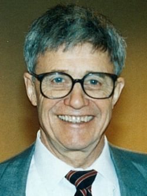
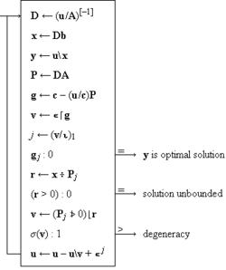
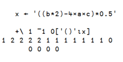
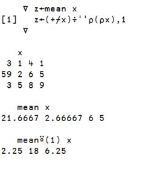
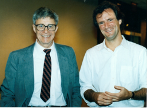
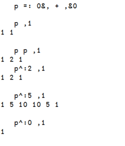
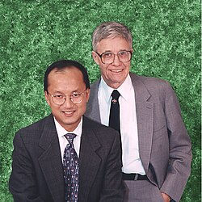

Kenneth E. Iverson | |
|---|---|
 Iverson in 1989 | |
| Born | 17 December 1920 Camrose, Alberta, Canada |
| Died | 19 October 2004 (aged 83) Toronto, Canada |
| Education | |
| Known for | Programming languages: APL, J |
| Awards | |
| Scientific career | |
| Fields |
|
| Institutions |
|
| Thesis | Machine Solutions of Linear Differential Equations – Applications to a Dynamic Economic Model (1954) |
_-_Ken_Iverson.png){kind=link}
Kenneth Eugene Iverson (17 December 1920 – 19 October 2004) was a Canadian computer scientist noted for the development of the programming language APL. He was honored with the Turing Award in 1979 "for his pioneering effort in programming languages and mathematical notation resulting in what the computing field now knows as APL; for his contributions to the implementation of interactive systems, to educational uses of APL, and to programming language theory and practice".[1]
Life
Ken Iverson was born on 17 December 1920 near Camrose, a town in central Alberta, Canada.[2] His parents were farmers who came to Alberta from North Dakota; his ancestors came from Trondheim, Norway.[3]
During World War II, he served first in the Canadian Army and then in the Royal Canadian Air Force.[3][4] He received a B.A. degree from Queen's University and the M.Sc. and Ph.D. degrees from Harvard University. In his career, he worked for Harvard, IBM, I. P. Sharp Associates, and Jsoftware Inc. (née Iverson Software Inc.).
Iverson suffered a stroke while working at the computer on a new J lab on 16 October 2004,[5] and died in Toronto on 19 October 2004 at age 83.[2]
Education
Iverson began school on 1 April 1926 in a one-room school,[4] initially in Grade 1, promoted to Grade 2 after 3 months and to Grade 4 by the end of June 1927. He left school after Grade 9 because it was the depths of the Great Depression and there was work to do on the family farm, and because he thought further schooling only led to becoming a schoolteacher and he had no desire to become one. At age 17, while still out of school, he enrolled in a correspondence course on radios with De Forest Training in Chicago, and learned calculus by self-study from a textbook.[4][6] During World War II, while serving in the Royal Canadian Air Force, he took correspondence courses toward a high school diploma.
After the war, Iverson enrolled in Queen's University in Kingston, Ontario, taking advantage of government support for ex-servicemen and under threat from an Air Force buddy who said he would "beat his brains out if he did not grasp the opportunity".[4] He graduated in 1950 as the top student with a bachelor's degree in mathematics and physics.[3]
Continuing his education at Harvard University, he began in the Department of Mathematics and received a master's degree in 1951. He then switched to the Department of Engineering and Applied Physics, working with Howard Aiken and Wassily Leontief.
Kenneth Iverson has recalled graduate study under Aiken as "like an apprenticeship" in which the student "learned the tools of the scholarship trade". Every topic was "used more as a focus for the development of skills such as clarity of thought and expression than as an end in itself". Once admitted to the program, a graduate student underwent a rite of "adoption into the fold". He was given a desk (or a share of a desk) among a group of other graduate students, the permanent staff, or visiting scholars, "most of whom were engaged in some aspect of the design and building of computers". A student was thus "made to feel part of a scholarly enterprise" and was provided, "often for the first time, with easy and intimate access to others more experienced in his chosen field".
— I. Bernard Cohen, Howard Aiken: Portrait of a Computer Pioneer, MIT Press, 1999, page 215.[7]
When interviewing Aiken, I had asked him whether Tropp and I might see his lecture notes; Aiken replied that he had always destroyed his lecture notes at the end of each year, so that he would not be tempted to repeat his lectures.
— I. Bernard Cohen and Gregory W. Welch, editors, Makin' Numbers, MIT Press, 1999, page xvi.[8]
Howard Aiken had developed the Harvard Mark I, one of the first large-scale digital computers, while Wassily Leontief was an economist who was developing the input–output model of economic analysis, work for which he would later receive the Nobel Prize. Leontief's model required large matrices and Iverson worked on programs that could evaluate these matrices on the Harvard Mark IV computer. Iverson received a Ph.D. in applied mathematics in 1954 with a dissertation based on this work.[9][10]
At Harvard, Iverson met Eoin Whitney, a 2-time Putnam Fellow and fellow graduate student from Alberta.[11][12] This had future ramifications.
Work
Harvard (1955–1960)
{kind=link}

Iverson stayed on at Harvard as an assistant professor to implement the world's first graduate program in "automatic data processing".[15][16][17]
Many people think that Aiken was interested only in scientific computers. This was simply not so. During one coffee hour, Aiken turned to Ken Iverson, who had just finished his Ph.D., and said: "These machines are going to be immensely important for business, and I want you to prepare and teach a course in business data processing next fall." There had never been such a course anywhere in the world. Ken was qualified only because he was a mathematician. I was so excited by the prospect that I immediately volunteered to be Ken's graduate teaching assistant.
— Frederick Brooks Jr., Aiken and the Harvard "Comp Lab", in I. Bernard Cohen and Gregory W. Welch, editors, Makin' Numbers, MIT Press, 1999, page 141.[8]
It was in this period that Iverson developed notation for describing and analyzing various topics in data processing, for teaching classes, and for writing (with Brooks) Automatic Data Processing.[18] He was "appalled" to find that conventional mathematical notation failed to fill his needs, and began work on extensions to the notation that were more suitable. In particular, he adopted the matrix algebra used in his thesis work, the systematic use of matrices and higher-dimensional arrays in tensor analysis, and operators in the sense of Heaviside in his treatment of Maxwell's equations, higher-order functions on function argument(s) with a function result.[4] The notation was also field-tested in the business world in 1957 during a 6-month sabbatical spent at McKinsey & Company.[4][19] The first published paper using the notation was The Description of Finite Sequential Processes, initially Report Number 23 to Bell Labs and later revised and presented at the Fourth London Symposium on Information Theory in August 1960.[13][20]
Iverson stayed at Harvard for five years but failed to get tenure, because "[he hadn't] published anything but the one little book".[3]
IBM (1960–1980)
Iverson joined IBM Research in 1960 (and doubled his salary).[4] He was preceded to IBM by Fred Brooks, who advised him to "stick to whatever [he] really wanted to do, because management was so starved for ideas that anything not clearly crazy would find support." In particular, he was allowed to finish and publish A Programming Language[20][21] and (with Brooks) Automatic Data Processing,[18] two books that described and used the notation developed at Harvard. (Automatic Data Processing and A Programming Language began as one book "but the material grew in both magnitude and level until a separation proved wise".[18][21])
At IBM, Iverson soon met Adin Falkoff, and they worked together for the next twenty years. Chapter 2 of A Programming Language used Iverson's notation to describe the IBM 7090 computer.[20][21] In early 1963 Falkoff, later joined by Iverson and Ed Sussenguth, proceeded to use the notation to produce a formal description of the IBM System/360 computer then under design.[22] The result was published in 1964 in a double issue of the IBM Systems Journal,[23] thereafter known as the "grey book" or "grey manual". The book was used in a course on computer systems design at the IBM Systems Research Institute.[23] A consequence of the formal description was that it attracted the interest of bright young minds.[4][24] One hotbed of interest was at Stanford University which included Larry Breed, Phil Abrams, Roger Moore, Charles Brenner,[25] and Mike Jenkins,[26][27] all of whom later made contributions to APL. Donald McIntyre, head of geology at Pomona College which had the first general customer installation of a 360 system, used the formal description to become more expert than the IBM systems engineer assigned to Pomona.[4][28]
With the completion of the formal description Falkoff and Iverson turned their attention to implementation. This work was brought to rapid fruition in 1965 when Larry Breed and Phil Abrams joined the project. They produced a FORTRAN-based implementation on the 7090 called IVSYS (for Iverson system) by autumn 1965, first in batch mode and later, in early 1966, in time-shared interactive mode.[25][29][30] Subsequently, Breed, Dick Lathwell (ex University of Alberta), and Roger Moore (of I. P. Sharp Associates) produced the System/360 implementation;[31] the three received the Grace Murray Hopper Award in 1973 "for their work in the design and implementation of APL\360, setting new standards in simplicity, efficiency, reliability and response time for interactive systems."[32] While the 360 implementation work was underway "Iverson notation"[30][33] was renamed "APL", by Falkoff.[34] The workspace "1 cleanspace" was saved at 1966-11-27 22.53.58 UTC.[24] APL\360 service began within IBM several weeks before that[35] and outside IBM in 1968.[29] Additional information on the implementation of APL\360 can be found in the Acknowledgements of the APL\360 User's Manual[36] and in "Appendix. Chronology of APL development" of The Design of APL.[22]
{kind=link}

The formal description and especially the implementation drove the evolution of the language, a process of consolidation and regularization in typography, linearization, syntax, and function definition described in APL\360 History,[39] The Design of APL,[22] and The Evolution of APL.[19] Two treatises from this period, Conventions Governing the Order of Evaluation[40] and Algebra as a Language,[41] are apologias of APL notation.
The notation was used by Falkoff and Iverson to teach various topics at various universities and at the IBM Systems Research Institute.[22][39] In 1964 Iverson used the notation in a one-semester course for seniors at the Fox Lane High School,[34][42] and later in Swarthmore High School.[4] After APL became available its first application was to teach formal methods in systems design at NASA Goddard.[39][43] It was also used at the Hotchkiss School,[25] Lower Canada College,[44] Scotch Plains High School,[45] Atlanta public schools,[46][47] among others. In one school the students became so eager that they broke into the school after hours to get more APL computer time;[24][48] in another the APL enthusiasts steered newbies to BASIC so as to maximize their own APL time.[25]
In 1969, Iverson and the APL group inaugurated the IBM Philadelphia Scientific Center.[29][39] In 1970 he was named IBM Fellow.[49] He used the funding that came with being an IBM Fellow to bring in visiting teachers and professors from various fields, including Donald McIntyre from Pomona[28] and Jeff Shallit as a summer student.[24] For a period of several months the visitors would start using APL for expositions in their own fields, and the hope was that later they would continue their use of APL at their home institutions.[50] Iverson's work at this time centered in several disciplines, including collaborative projects in circuit theory, genetics, geology, and calculus.[51][52][53][54] When the PSC closed in 1974,[29][34] some of the group transferred to California while others including Iverson remained in the East, later transferring back to IBM Research. He received the Turing Award in 1979.[1]
The following table lists the publications which Iverson authored or co-authored while he was at IBM. They reflect the two main strands of his work.
- Education
- Automatic Data Processing[18]
- Elementary Functions: An Algorithmic Treatment[42]
- The Use of APL in Teaching[55]
- Using the Computer to Compute[56]
- Algebra: An Algorithmic Treatment[57]
- APL in Exposition[58]
- An Introduction to APL for Scientists and Engineers[59]
- Introducing APL to Teachers[60]
- Elementary Analysis[61]
- Programming Style in APL[62]
- Language design & implementation
- A Programming Language[21]
- A Programming Language[63]
- A Common Language for Hardware, Software, and Applications[64]
- Programming Notation in System Design[65]
- Formalism in Programming Languages[66]
- A Method of Syntax Specification[67]
- A Formal Description of System/360[23]
- APL\360 User's Manual[36]
- Communication in APL Systems[68]
- The Design of APL[22]
- APL as an Analytic Notation[69]
- APLSV User's Manual[70]
- APL Language[71]
- Two Combinatoric Operators[72]
- The Evolution of APL[19]
- Operators and Functions[73]
- The Role of Operators in APL[74]
- The Derivative Operator[75]
- Operators[76]
- Notation as a Tool of Thought[1]
I. P. Sharp Associates (1980–1987)
{kind=link}

In 1980, Iverson left IBM for I. P. Sharp Associates,[79][80] an APL time-sharing company. He was preceded there by his IBM colleagues Paul Berry, Joey Tuttle, Dick Lathwell, and Eugene McDonnell. At IPSA, the APL language and systems group was managed by Eric Iverson (Ken Iverson's son); Roger Moore, one of the APL\360 implementers, was a vice president.
Iverson worked to develop and extend APL on the lines presented in Operators and Functions.[73][81] The language work gained impetus in 1981 when Arthur Whitney and Iverson produced a model of APL written in APL[82][83] at the same time they were working on IPSA's OAG database.[3][12][84] (Iverson introduced Arthur Whitney, son of Eoin Whitney, to APL when he was 11 years old[12] and in 1974 recommended him for a summer student position at IPSA Calgary.[24]) In the model, the APL syntax was driven by an 11-by-5 table. Whitney also invented the rank operator in the process.[85] The language design was further simplified and extended in Rationalized APL[86] in January 1983, multiple editions of A Dictionary of the APL Language between 1984 and 1987, and A Dictionary of APL[87] in September 1987. Within IPSA, the phrase "dictionary APL" came into use to denote the APL specified by A Dictionary of APL, itself referred to as "the dictionary". In the dictionary, APL syntax is controlled by a 9-by-6 table and the parsing process was precisely and succinctly described in Table 2, and there is a primitive (monadic ⊥, modeled in APL) for word formation (lexing).
In the 1970s and 1980s, the main APL vendors were IBM, STSC, and IPSA, and all three were active in developing and extending the language. IBM had APL2, based on the work of Jim Brown.[88][89][90] Work on APL2 proceeded intermittently for 15 years,[29] with actual coding starting in 1971 and APL2 becoming available as an IUP (Installed User Program, an IBM product classification) in 1982. STSC had an experimental APL system called NARS, designed and implemented by Bob Smith.[91][92] NARS and APL2 differed in fundamental respects from dictionary APL,[93] and differed from each other.
I.P. Sharp implemented the new APL ideas in stages: complex numbers,[94] enclosed (boxed) arrays, match, and composition operators in 1981,[95] the determinant operator in 1982,[96] and the rank operator, link, and the left and right identity functions in 1983.[97] However, the domains of operators were still restricted to the primitive functions or subsets thereof. In 1986, IPSA developed SAX,[77][98] SHARP APL/Unix, written in C and based on an implementation by STSC. The language was as specified in the dictionary with no restrictions on the domains of operators. An alpha version of SAX became available within I.P. Sharp around December 1986 or early 1987.
In education, Iverson developed A SHARP APL Minicourse[99][100] used to teach IPSA clients in the use of APL, and Applied Mathematics for Programmers[101] and Mathematics and Programming[102] which were used in computer science courses at T.H. Twente.
{kind=link}

Publications which Iverson authored or co-authored while he was at I. P. Sharp Associates:
- Education
- Language design & implementation
- Operators and Enclosed Arrays[103]
- Direct Definition[104]
- Composition and Enclosure[95]
- A Function Definition Operator[105]
- Determinant-Like Functions Produced by the Dot-Operator[96]
- Practical Uses of a Model of APL[82]
- Rationalized APL[86]
- APL Syntax and Semantics[83]
- Language Extensions of May 1983[97]
- An Operator Calculus[106]
- APL87[107]
- A Dictionary of APL[87]
- Processing Natural Language: Syntactic and Semantic Mechanisms[108]
Jsoftware (1990–2004)
{kind=link}


Iverson retired from I. P. Sharp Associates in 1987. He kept busy while "between jobs". Regarding language design, the most significant of his activities in this period was the invention of "fork" in 1988.[111] For years, he had struggled to find a way to write f+g as in calculus, from the "scalar operators" in 1978,[73] through the "til" operator in 1982,[82][86] the catenation and reshape operators in 1984,[106] the union and intersection operators in 1987,[87] "yoke" in 1988,[112] and finally forks in 1988. Forks are defined as follows:
| (f g h) y | ←→ | (f y) g (h y) | |
| x (f g h) y | ←→ | (x f y) g (x h y) |
Moreover, (f g p q r) ←→ (f g (p q r)). Thus to write f+g as in calculus, one can write f+g in APL. Iverson and Eugene McDonnell worked out the details on the long plane rides to the APL88 conference in Sydney, Australia, with Iverson coming up with the initial idea on waking up from a nap.[85][113][81]: §1.3, §3.8
Iverson presented the rationale for his work post 1987 as follows:[16]
When I retired from paid employment, I turned my attention back to this matter [the use of APL for teaching] and soon concluded that the essential tool required was a dialect of APL that:
- • Is available as "shareware", and is inexpensive enough to be acquired by students as well as by schools
- • Can be printed on standard printers
- • Runs on a wide variety of computers
- • Provides the simplicity and the generality of the latest thinking in APL
The result has been J, first reported in [the APL 90 Conference Proceedings].[114]
Roger Hui described the final impetus that got J started in Appendix A of An Implementation of J:[115]
One summer weekend in 1989, Arthur Whitney visited Ken Iverson at Kiln Farm and produced—on one page and in one afternoon—an interpreter fragment on the AT&T 3B1 computer. I studied this interpreter for about a week for its organization and programming style; and on Sunday, August 27, 1989, at about four o'clock in the afternoon, wrote the first line of code that became the implementation described in this document. Arthur's one-page interpreter fragment is as follows: ...
Hui, a classmate of Whitney at the University of Alberta, had studied A Dictionary of the APL Language when he was between jobs,[4] modelled the parsing process in at least two different ways,[85] and investigated uses of dictionary APL in diverse applications.[116] As well, from January 1987 to August 1989 he had access to SAX,[77] and in the later part of that period used it on a daily basis.[85]
J initially took A Dictionary of APL[87] as the specification, and the J interpreter was built around Table 2 of the dictionary. The C data and program structures were designed so that the parse table in C corresponded directly to the parse table in the dictionary.[85] In retrospect, Iverson's APL87 paper APL87,[107] in five pages, prescribed all the essential steps in writing an APL interpreter, in particular the sections on word formation and parsing. Arthur Whitney, in addition to the "one-page thing", contributed to J development by suggesting that primitives be oriented on the leading axis, that agreement (a generalization of scalar extension) should be prefix instead of suffix,[117] and that a total array ordering be defined.[118]
One of the objectives was to implement fork. This turned out to be rather straightforward, by the inclusion of one additional row in the parse table. The choice to implement forks was fortuitous and fortunate. It was realized only later[119][120] that forks made tacit expressions (operator expressions) complete in the following sense: any sentence involving one or two arguments that did not use its arguments as an operand, can be written tacitly with fork, compose, the left and right identity functions, and constant functions.
Two obvious differences between J and other APL dialects are: (a) its use of terms from natural languages instead of from mathematics or computer science (the practice began with A Dictionary of APL): noun, verb, adverbs, alphabet, word formation, sentence, ... instead of array, function, operator, character set, lexing, expression, ... ; and (b) its use of 7-bit ASCII characters instead of special symbols. Other differences between J and APL are described in J for the APL Programmer[121] and APL and J.[122]
The J source code is available from Jsoftware under the GNU General Public License version 3 (GPL3), or a commercial alternative.[123]
Eric Iverson founded Iverson Software Inc., in February 1990 to provide an improved SHARP APL/PC product. It quickly became obvious that there were shared interests and goals, and in May 1990 Iverson and Hui joined Iverson Software Inc.; later joined by Chris Burke. The company soon became J only. The name was changed to Jsoftware Inc., in April 2000.[85]
{kind=link}

Publications which Iverson authored or co-authored while he was at Iverson Software Inc. and Jsoftware Inc.:
- Education
- Language design & implementation
Awards and honors
- IBM Fellow, IBM, 1970[1][49]
- Harry H. Goode Memorial Award, IEEE Computer Society, 1975[49]
- Member, National Academy of Engineering (USA), 1979[138]
- Turing Award, Association for Computing Machinery, 1979[1]
- Computer Pioneer Award (Charter recipient), IEEE Computer Society, 1982[139]
- Honorary doctorate, York University, 1998[140]
- In 2015, a new moth species, Agdistis iversoni, was named after him.[141]
See also
References
- ^ a b c d e Iverson, Kenneth E. (August 1980). "Notation as a Tool of Thought". Communications of the ACM. 23 (8): 444–465. doi:10.1145/358896.358899. Retrieved 8 April 2016.
- ^ a b Campbell-Kelly, Martin (16 November 2004). "Kenneth Iverson". The Independent. Retrieved 15 December 2022.
- ^ a b c d e Hui, Roger, ed. (30 September 2005). Ken Iverson Quotations and Anecdotes. Retrieved 12 February 2019.
- ^ a b c d e f g h i j k Iverson, Kenneth E.; McIntyre, Donald E. (2008). Kenneth E. Iverson (Autobiography). Retrieved 8 April 2016.
- ^ Iverson, Eric B. (21 October 2004). Dr. Kenneth E. Iverson (J Forum message). Archived from the original on 25 January 2020. Retrieved 8 April 2016.
- ^ March, Herman W.; Wolff, Henry C. (1917). Calculus. McGraw-Hill.
- ^ Cohen, I. Bernard (1999). Howard Aiken: Portrait of a Computer Pioneer. MIT Press. ISBN 978-0-262-03262-9.
- ^ a b Cohen, I. Bernard; Welch, Gregory W., eds. (1999). Makin' Numbers. MIT Press. ISBN 978-0-262-03263-6.
- ^ Iverson, Kenneth E. (1954). Machine Solutions of Linear Differential Equations – Applications to a Dynamic Economic Model (Ph.D. thesis). Harvard University. Retrieved 7 April 2016.
- ^ Hui, Roger (August 2012). "MSLDE". Jwiki Essay. Retrieved 22 April 2016.
- ^ Whitney, Arthur (August 2006). "Memories of Ken". Vector. 22 (3). Retrieved 25 April 2016.
- ^ a b c Cantrill, Bryan (February 2009). "A Conversation with Arthur Whitney". ACM Queue. 7 (2). Retrieved 7 April 2016.
- ^ a b Iverson, Kenneth E. (August 1960). "The Description of Finite Sequential Processes". Symposium on Information Theory. Royal Institution, London. Retrieved 9 April 2016.
- ^ Montalbano, Michael S. (October 1982). A Personal History of APL. Retrieved 10 April 2016.
- ^ Iverson, Kenneth E. (June 1954). Jacobson, Arvid W. (ed.). "Graduate Instruction and Research". Proceedings of the First Conference on Training Personnel for the Computing Machine Field. Wayne State University. Retrieved 9 April 2016.
- ^ a b c Iverson, Kenneth E. (December 1991). "A Personal View of APL". IBM Systems Journal. 30 (4): 582–593. doi:10.1147/sj.304.0582. Retrieved 9 April 2016.
- ^ Brooks, Frederick P. (August 2006). "The Language, the Mind and the Man". Vector. 22 (3): 72. Archived from the original on 17 March 2018. Retrieved 16 March 2018.
- ^ a b c d Brooks Jr., Frederick P.; Iverson, Kenneth E. (1963). Automatic Data Processing. Wiley. ISBN 978-0-471-10599-2.
- ^ a b c Falkoff, Adin D.; Iverson, Kenneth E. (August 1978). "The Evolution of APL". ACM SIGPLAN Notices. 13 (8): 47–57. doi:10.1145/960118.808372. S2CID 6050177. Retrieved 9 April 2016.
- ^ a b c Iverson, Kenneth E. (14 December 1983). Letter to J.K. Tuttle. Retrieved 16 April 2016.
- ^ a b c d Iverson, Kenneth E. (1962). A Programming Language. John Wiley & Sons. Retrieved 9 April 2016. ISBN 978-0-471-43014-8.
- ^ a b c d e Falkoff, Adin D.; Iverson, Kenneth E. (July 1973). "The Design of APL". IBM Journal of Research and Development. 17 (4): 324–334. doi:10.1147/rd.174.0324. Retrieved 9 April 2016.
- ^ a b c Falkoff, Adin D.; Iverson, Kenneth E.; Sussenguth, Edward H. (1964). "A Formal Description of System/360" (PDF). IBM Systems Journal. 3 (3): 198–261. doi:10.1147/sj.32.0198. Archived from the original (PDF) on 13 August 2006.
- ^ a b c d e Hui, Roger, ed. (September 2010). APL Quotations and Anecdotes. Archived from the original on 5 July 2018. Retrieved 9 April 2016.
- ^ a b c d Breed, Larry (August 2006). "How We Got to APL\1130". Vector. 22 (3). Archived from the original on 18 March 2016. Retrieved 13 April 2016.
- ^ Jenkins, Michael A. (June 1970). "The Solution of Linear Systems of Equations and Linear Least Squares Problems in APL". Technical Report Number 320-2989. IBM Corp.
- ^ Jenkins, Michael A. (10 February 1972). "Domino – An APL Primitive Function for Matrix Inverse – Its Implementation and Applications". APL Quote Quad. 3 (4). Reprinted in Jenkins, M. A. (1972). "DOMINO: An APL Primitive Function for Matrix Inversion – – Its Implementation and Applications". ACM SIGPLAN Notices. 7 (4): 29–40. doi:10.1145/1115910.1115911.
- ^ a b McIntyre, Donald B. (August 2006). "A Tribute to Ken Iverson". Vector. 22 (3). Retrieved 25 April 2016.
- ^ a b c d e Falkoff, Adin D. (December 1991). "The IBM Family of APL Systems". IBM Systems Journal. 30 (4): 416–432. doi:10.1147/sj.304.0416.
- ^ a b Abrams, Philip S. (17 August 1966). "An Interpreter for "Iverson Notation"" (PDF). Technical Report: CS-TR-66-47. Department of Computer Science, Stanford University. Archived from the original (PDF) on 30 September 2015. Retrieved 17 April 2016.
- ^ Falkoff, Adin D.; Iverson, Kenneth E. (16 October 1967). "The APL\360 Terminal System". Research Report RC-1922. IBM. Retrieved 9 April 2016.
- ^ ACM Grace Murray Hopper Award (1973): Breed, Lathwell, and Moore; retrieved 14 April 2016.
- ^ Horvath, Robert W. (August 1966). Introduction to Iverson Notation. IBM Systems Development Division, Poughkeepsie, NY.
- ^ a b c McDonnell, Eugene, ed. (1981). A Source Book in APL, Introduction. APL Press. Retrieved 19 April 2016.
- ^ Breed, Larry (September 1991). "The First APL Terminal Session". APL Quote Quad. 22 (1): 2–4. doi:10.1145/138094.140933. S2CID 43138444.
- ^ a b Falkoff, Adin D.; Iverson, Kenneth E. (1968). APL\360 User's Manual (PDF). IBM. Retrieved 11 April 2016.
- ^ a b Hui, Roger (11 October 2014). Sixteen APL Amuse-Bouches. Retrieved 12 April 2016.
- ^ Perlis, Alan J. (29 March 1978). "Almost Perfect Artifacts Improve only in Small Ways: APL is more French than English". APL 78 Conference Proceedings. Retrieved 12 April 2016.
- ^ a b c d Falkoff, Adin D. (July 1969). "APL\360 History". Proceedings of the APL Users Conference at SUNY Binghamton. Retrieved 9 April 2016.
- ^ Iverson, Kenneth E. (1966). Conventions Governing Order of Evaluation (Appendix A of Elementary Functions: An Algorithmic Treatment). Science Research Associates. Retrieved 16 April 2016.
- ^ Iverson, Kenneth E. (1972). Algebra as a Language (Appendix A of Algebra: An Algorithmic Treatment). Addison-Wesley. Retrieved 16 April 2016.
- ^ a b Iverson, Kenneth E. (March 1966). Elementary Functions: An Algorithmic Treatment. Science Research Associates.
- ^ McDonnell, Eugene (December 1979). "The Socio-Technical Beginnings of APL". APL Quote Quad. 10 (2): 13. doi:10.1145/586148.586155. S2CID 18025422. Retrieved 24 April 2016.
- ^ Goldsmith, Leslie H. Hui, Roger (ed.). APL Quotations and Anecdotes. Archived from the original on 5 July 2018. Retrieved 13 April 2016.
- ^ McDonnell, Eugene (September 1980). "Recreational APL, Pyramigram". APL Quote Quad. 11 (1). Retrieved 13 April 2016.
- ^ "APL in the Atlanta Public Schools". SHARE*APL\360 Newsletter (3). October 1969.
- ^ APL IV: Fourth International APL Conference. June 1972. Retrieved 29 April 2016.
- ^ Biancuzzi, Federico; Warden, Shane (March 2009). Masterminds of Programming. O'Reilly Media. Archived from the original on 5 July 2018. Retrieved 13 April 2016.
- ^ a b c "Iverson Receives Harry Goode Award". APL Quote Quad. 6 (2). June 1975. Retrieved 8 April 2016.
- ^ Berry, Paul (August 2006). "Expository Programming". Vector. 22 (3). Retrieved 25 April 2015.
- ^ Berry, Paul; Bartoli, G.; Dell'Aquila, C.; Spadavecchia, V. (March 1973). "APL and Insight". TR No. CRB 002/513-3502. IBM Corp.
- ^ Spence, Robert (March 1973). Resistive Circuit Theory. IBM.
- ^ Orth, Donald L. (1976). Calculus in a New Key. APL Press. ISBN 978-0-917326-05-9.
- ^ Berry, Paul; Thorstensen, John (1973). "Starmap". TR No. 02.665. IBM Corp.
- ^ Iverson, Kenneth E. (1969). The Use of APL in Teaching. IBM Pub. No. G320-0996. Retrieved 15 April 2016.
- ^ Berry, Paul; Falkoff, Adin D.; Iverson, Kenneth E. (24 August 1970). "Using the Computer to Compute: A Direct but Neglected Approach to Teaching Mathematics". IFIP World Conference on Computer Education.
- ^ Iverson, Kenneth E. (1972). Algebra: An Algorithmic Treatment. Addison-Wesley.
- ^ Iverson, Kenneth E. (January 1972). "APL in Exposition" (PDF). Technical Report Number RC 320-3010. IBM Philadelphia Scientific Center. Retrieved 9 April 2016.
- ^ Iverson, Kenneth E. (March 1973). "An Introduction to APL for Scientists and Engineers". Technical Report Number RC 320-3019. IBM Philadelphia Scientific Center. Retrieved 9 April 2016.
- ^ Iverson, Kenneth E. (July 1972). "Introducing APL to Teachers". Technical Report Number RC 320-3014. IBM Philadelphia Scientific Center. Retrieved 9 April 2016.
- ^ Iverson, Kenneth E. (1976). Elementary Analysis. APL Press.
- ^ Iverson, Kenneth E. (September 1978). "Programming Style in APL". Proceedings of an APL Users Meeting. I. P. Sharp Associates. Retrieved 9 April 2016.
- ^ Iverson, Kenneth E. (May 1962). "A Programming Language". Proceedings of the AFIPS Spring Joint Computer Conference, San Francisco. Retrieved 13 April 2016.
- ^ Iverson, Kenneth E. (December 1962). "A Common Language for Hardware, Software, and Applications". Proceedings of the AFIPS Fall Joint Computer Conference, Philadelphia. Retrieved 13 April 2016.
- ^ Iverson, Kenneth E. (June 1963). "Programming Notation in System Design". IBM Systems Journal. 2 (2): 117–128. doi:10.1147/sj.22.0117. Retrieved 13 April 2016.
- ^ Iverson, Kenneth E. (February 1964). "Formalism in Programming Languages". Communications of the ACM. 7 (2): 80–88. doi:10.1145/363921.363933. S2CID 14145756. Retrieved 13 April 2016.
- ^ Iverson, Kenneth E. (October 1964). "A Method of Syntax Specification". Communications of the ACM. 7 (10): 588–589. doi:10.1145/364888.364969. S2CID 194665.
- ^ Falkoff, Adin D.; Iverson, Kenneth E. (May 1973). "Communication in APL Systems". Technical Report 320-3022. IBM Philadelphia Scientific Center.
- ^ Iverson, Kenneth E. (1973). APL as an Analytic Notation. IBM Philadelphia Scientific Center.
- ^ Falkoff, Adin D.; Iverson, Kenneth E. (1973). "APLSV User's Manual" (PDF). Sh20-1460. IBM Philadelphia Scientific Center. Retrieved 16 April 2016.
- ^ Falkoff, Adin D.; Iverson, Kenneth E. (March 1975). APL Language (Form No. GC26-3847) (PDF). IBM. Archived from the original (PDF) on 25 January 2019. Retrieved 22 June 2018.
- ^ Iverson, Kenneth E. (September 1976). "Two combinatoric operators". Proceedings of the eighth international conference on APL - APL '76. pp. 233–237. doi:10.1145/800114.803681. S2CID 20408139.
- ^ a b c Iverson, Kenneth E. (26 April 1978). "Operators and Functions". Research Report #RC7091. IBM. Retrieved 9 April 2016.
- ^ Iverson, Kenneth E. (June 1979). "The role of operators in APL". Proceedings of the international conference on APL: Part 1 - APL '79. pp. 128–133. doi:10.1145/800136.804450. Retrieved 10 April 2016.
- ^ Iverson, Kenneth E. (June 1979). "The derivative operator". Proceedings of the international conference on APL: Part 1 - APL '79. pp. 347–354. doi:10.1145/800136.804486.
- ^ Iverson, Kenneth E. (October 1979). "Operators". ACM Transactions on Programming Languages and Systems. 1 (2): 161–176. doi:10.1145/357073.357074.
- ^ a b c Steinbrook, David H. (1986). SAX Reference. I. P. Sharp Associates.
- ^ Hui, Roger (August 2010). "On Average". Vector. 22 (4). Retrieved 12 April 2016.
- ^ IPSA (January 1980). "Dr. Kenneth E. Iverson" (PDF). The I.P. Sharp Newsletter. 8 (1). Retrieved 8 August 2019.
- ^ Hui, Roger, ed. (14 May 2009). Eugene McDonnell Quotations and Anecdotes. Retrieved 5 April 2016.
- ^ a b Hui, Roger; Kromberg, Morten (June 2020). "APL Since 1978". Proceedings of the ACM on Programming Languages. 4 (HOPL): 1–108. doi:10.1145/3386319. S2CID 218517570.
- ^ a b c Iverson, Kenneth E. and Arthur T. Whitney (September 1982). "Practical Uses of a Model of APL". APL 82 Conference Proceedings. Retrieved 10 April 2016.
- ^ a b Iverson, Kenneth E. (March 1983). "APL Syntax and Semantics". APL 83 Conference Proceedings. Retrieved 10 April 2016.
- ^ A Celebration of Kenneth Iverson. Computer History Museum. 30 November 2004. Archived from the original on 21 July 2011. Retrieved 17 April 2016.
- ^ a b c d e f Hui, Roger (November 2014). Remembering Ken Iverson. Archived from the original on 6 June 2008. Retrieved 10 April 2016.
- ^ a b c Iverson, Kenneth E. (6 January 1983). Rationalized APL. I. P. Sharp Associates. Retrieved 10 April 2016.
- ^ a b c d Iverson, Kenneth E. (September 1987). "A Dictionary of APL". APL Quote Quad. 18 (1): 5–40. doi:10.1145/36983.36984. S2CID 18301178. Retrieved 10 April 2016.
- ^ Brown, James A. (1971). A Generalization of APL (Ph.D. thesis). Department of Computer and Information Sciences, Syracuse University.
- ^ Brown, James A. (1984). "The Principles of APL2". Technical Report 03.247. IBM Santa Teresa Laboratory.
- ^ Brown, James A. (1988). "APL2 Programming: Language Reference". Sh20-9227. IBM Corporation.
- ^ Smith, Bob (1981). "Nested arrays, operators, and functions". Proceedings of the international conference on APL - APL '81. pp. 286–290. doi:10.1145/800142.805376. ISBN 0-89791-035-4.
- ^ Cheney, Carl M. (1981). APL*PLUS Nested Array System (PDF). STSC, Inc. Retrieved 19 April 2016.
- ^ Orth, Donald L. (December 1981). "A Comparison of the IPSA and STSC Implementations of Operators and General Arrays". APL Quote Quad. 12 (2): 11. doi:10.1145/586656.586662. S2CID 1642446. Retrieved 13 April 2016.
- ^ McDonnell, Eugene (20 June 1981). "Complex Numbers". SHARP APL Technical Note. 40. Retrieved 11 April 2016.
- ^ a b Iverson, Kenneth E. (20 June 1981). "Composition and Enclosure". SHARP APL Technical Note. 41. Retrieved 11 April 2016.
- ^ a b Iverson, Kenneth E. (1 April 1982). "Determinant-Like Functions Produced by the Dot-Operator". SHARP APL Technical Note. 42. Retrieved 11 April 2016.
- ^ a b Bernecky, Robert; Iverson, Kenneth E.; McDonnell, Eugene; Metzger, Robert; Schueler, J. Henri (2 May 1983). "Language Extensions of May 1983". SHARP APL Technical Note. 45. Retrieved 11 April 2016.
- ^ Tuttle, Joey K. (August 2006). "What's Wrong with My Programming?". Vector. 22 (3). Retrieved 25 April 2016.
- ^ a b Iverson, Kenneth E. (6 October 1980). "The Inductive Method of Introducing APL". 1980 APL Users Meeting Proceedings. Retrieved 10 April 2016.
- ^ a b Iverson, Kenneth E. (January 1981). A SHARP APL Minicourse. I. P. Sharp Associates.
- ^ a b Iverson, Kenneth E. (1984). Applied Mathematics for Programmers. I. P. Sharp Associates.
- ^ a b Iverson, Kenneth E. (July 1986). Mathematics and Programming. I. P. Sharp Associates.
- ^ Bernecky, Robert; Iverson, Kenneth E. (6 October 1980). "Operators and Enclosed Arrays". 1980 APL Users Meeting Proceedings. Retrieved 10 April 2016.
- ^ Iverson, Kenneth E. (October 1980). "Direct Definition". SHARP APL Technical Note. 36.
- ^ Iverson, Kenneth E.; Wooster, Peter K. (September 1981). "A function definition operator". APL Quote Quad. 12: 142–145. doi:10.1145/390007.805349.
- ^ a b Iverson, Kenneth E.; Pesch, Roland H.; Schueler, J. Henri (June 1984). "An Operator Calculus". APL 84 Conference Proceedings. Retrieved 10 April 2016.
- ^ a b Iverson, Kenneth E. (May 1987). "APL87". APL 87 Conference Proceedings. Retrieved 10 April 2016.
- ^ Hagamen, W.D.; Berry, P.C.; Iverson, K.E.; Weber, J.C. (August 1989). "Processing natural language syntactic and semantic mechanisms". Conference Proceedings on APL as a Tool of Thought, APL 1989, New York City, NY, USA, August 7–10, 1989. APL Quote Quad. 19 (4): 184–189. doi:10.1145/75144.75170. ISBN 0897913272. S2CID 14004227.
{{cite journal}}: CS1 maint: periodical has ISBN (link) - ^ Hui, Roger (3 December 2014). "Ken Iverson's Favorite APL Expression?". Dyalog Blog. Retrieved 12 April 2016.
- ^ Dyalog APL Language Reference (version 14.0 or later) (PDF). Dyalog Limited. 2014. Retrieved 16 April 2016.
- ^ a b Iverson, Kenneth E. and Eugene McDonnell (August 1989). "Phrasal Forms". APL 89 Conference Proceedings. Retrieved 10 April 2016.
- ^ a b Iverson, Kenneth E. (September 1988). "A Commentary on APL Development". APL Quote Quad. 19 (1): 3–8. doi:10.1145/379279.379330. S2CID 18392328. Retrieved 13 April 2016.
- ^ Hodgkinson, Rob (19 October 2017). J Programming Forum post. Archived from the original on 5 February 2020. Retrieved 22 June 2018.
- ^ a b Hui, Roger; Iverson, Kenneth E.; McDonnell, Eugene; Whitney, Arthur (July 1990). "APL/?". APL 90 Conference Proceedings. Retrieved 10 April 2016.
- ^ Hui, Roger (27 January 1992). An Implementation of J (PDF). Iverson Software Inc. Retrieved 10 April 2016.
- ^ Hui, Roger (May 1987). "Some Uses of { and }". APL 87 Conference Proceedings. Retrieved 15 April 2016.
- ^ Hui, Roger (June 1995). "Rank and Uniformity". APL 95 Conference Proceedings. Retrieved 15 April 2016.
- ^ Hui, Roger (27 January 2006). "The TAO of J". J Wiki Essay. Retrieved 24 May 2016.
- ^ a b Hui, Roger; Iverson, Kenneth E.; McDonnell, Eugene (August 1991). "Tacit definition". Proceedings of the international conference on APL '91 - APL '91. pp. 202–211. doi:10.1145/114054.114077. ISBN 0897914414. S2CID 8940369. Retrieved 10 April 2016.
- ^ Cherlin, Edward (August 1991). "Pure functions in APL and J". Proceedings of the international conference on APL '91 - APL '91. pp. 88–93. doi:10.1145/114054.114065. ISBN 0897914414. S2CID 25802202.
- ^ Burke, Chris; Hui, Roger (September 1996). "J for the APL Programmer". APL Quote Quad. 27 (1): 11–17. doi:10.1145/1151395.1151400. S2CID 9203778. Retrieved 14 April 2016.
- ^ Burke, Chris (2 March 2005). APL and J (PDF). Retrieved 16 April 2016.
- ^ J Source. Jsoftware, Inc. Archived from the original on 22 April 2016. Retrieved 15 April 2016.
- ^ Iverson, Kenneth E. (1991). Tangible Math. Iverson Software Inc.
- ^ Iverson, Kenneth E. (1991). Programming in J. Iverson Software Inc.
- ^ Iverson, Kenneth E. (1991). Arithmetic (PDF). Iverson Software Inc. Retrieved 10 April 2016.
- ^ Iverson, Kenneth E. (1993). Calculus (PDF). Iverson Software Inc. Retrieved 10 April 2016.
- ^ Iverson, Kenneth E. (1995). Concrete Math Companion (PDF). Iverson Software Inc. Retrieved 10 April 2016.
- ^ Iverson, Kenneth E. (1996). Exploring Math (PDF). Iverson Software Inc. Retrieved 10 April 2016.
- ^ Burke, Chris; Hui, Roger; Iverson, Kenneth E.; McDonnell, Eugene; McIntyre, Donald B. (1996). J Phrases. Iverson Software Inc. Retrieved 10 April 2016.
- ^ Burke, Chris; Hui, Roger; Iverson, Eric; Iverson, Kenneth E.; Iverson, Kirk (1998). ICFP '98 Contest Winners. Retrieved 15 April 2016.
- ^ Iverson, Kenneth E. (1999). Math for the Layman. JSoftware Inc. Retrieved 10 April 2016.
- ^ Hui, Roger; Iverson, Kenneth E. (1991). "J Introduction and Dictionary". Jsoftware Inc. Retrieved 9 April 2016.
- ^ Iverson, Kenneth E. (March 1994). "Revisiting Rough Spots". APL Quote Quad. 24 (3): 13–16. doi:10.1145/181983.181986. S2CID 2140469. Retrieved 13 April 2016.
- ^ Iverson, Kenneth E. (1996). Computers and Mathematical Notation. Iverson Software Inc. Retrieved 10 April 2016.
- ^ Hui, Roger; Iverson, Kenneth E. (January 1998). "Mathematical roots of J". Proceedings of the conference on Share knowledge share success - APL '97. pp. 21–30. doi:10.1145/316689.316698. S2CID 2317632.
- ^ Iverson, Kenneth E. (August 2006). "APL in the New Millennium". Vector. 22 (3). Retrieved 25 April 2016.
- ^ NAE Members Directory. National Academy of Engineering. Retrieved 22 April 2016.
- ^ Computer Pioneer Award (Charter Recipient). IEEE Computer Society. 1982. Retrieved 8 April 2016.
- ^ Drummond, B. (11 June 1998). Citation for Dr. Kenneth Iverson. York University. Retrieved 8 April 2016.
- ^ Kovtunovich, Vasily N.; Ustjuzhanin, Petr Ya. (2015). "New species of plume moths of the genus Agdistis Hübner, 1825 (Lepidoptera: Pterophoridae: Agdistinae) from southern Africa". African Invertebrates. 56 (1): 137–139. Bibcode:2015AfrIn..56..137K. doi:10.5733/afin.056.0110.
The species is named after Kenneth Eugene Iverson (1920–2004), a Canadian computer scientist who developed the programming languages APL and J.
External links
- Works by Kenneth E. Iverson at Open Library
- A Celebration of the Life of Kenneth Eugene Iverson
- Collected Eulogies
- Iverson Exam Archived 24 May 2016 at the Wayback Machine
programming competition at the University of Alberta for high school students - Ken Iverson Quotations and Anecdotes
illustrations of what Iverson was like as a person, what he was like to work with, the milieu in which he studied and worked, his outlook on life, his sense of humor, etc. - APL Quotations and Anecdotes
sketches of Iverson, his colleagues, and his intellectual descendants